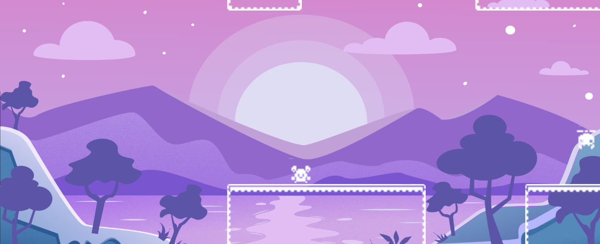

Nightmare Platformer
Technical details
Engine: Unity
Version: 2022.3.14f1
Genre: Platformer
Assets: Free from Unity Marketplace
Itch.io: Link
Description
The game idea was created for Big Mode Game Jam 2023, but it wasn't finished. I spent few hours for few days to make my concept happen. There are 2 core mechanics - changing the gravity and when you kill enemies you enter nightmare mode, where everything changes colors and enemies can shoot you. Killing enemies is optional for this reason. To make this idea working I had to came up with some solutions in my code, which will be shown later on.
Changing the gravity
To change the gravity there ar two conditions that have to be met - the player's character has to be grounded and the space bar has to be clicked. After meeting those conditions physics gravity has to be changed to the opposite in the vertical axis. To keep the sprite matching the gravity its vertical axis has to be scaled the same way. Function managing this is shown below.
private void ChangeGravity() {
if (Input.GetKeyDown(KeyCode.Space) && onGround) {
gravityUp = !gravityUp;
Physics2D.gravity *= new Vector2(1, -1);
transform.localScale *= new Vector2(1, -1);
}
}Normal and nightmare mode

Description of this part will be divided into few parts of code. Everything is placed in Game Manager script. First there is a bool representing whether the nightmare mode is active. Which is accesible from other scripts to act according to the active mode.
private bool nightmareActive = false;
public bool NightmareActive {
get {
return nightmareActive;
}
}Then we want to activate the nightmare whenever player kills 2 or more enemies. This is handled specifically in enemyKilledCounter and the setter handles the changing of the above booleaen.
public int EnemyKilledCounter {
get {
return enemyKilledCounter;
}
set {
enemyKilledCounter += value;
if (enemyKilledCounter >= 2) {
nightmareActive = true;
}
}
}Next we have function that changes the looks and feeling of the nightmare. It changes background, colors and speed. DeactivateNightmare does similar thing, but in the opposite direction. Code for activation of nightmare is shown below.
private void ActivateNightmare() {
nightmareBackground.SetActive(true);
normalBackground.SetActive(false);
SpriteRenderer[] allSprites = FindObjectsOfType();
foreach (SpriteRenderer sprite in allSprites) {
sprite.color = nightmareColor;
}
Tilemap[] allTilemaps = FindObjectsOfType();
foreach (Tilemap tilemap in allTilemaps) {
tilemap.color = nightmareColor;
}
EnemyController[] allEnemies = FindObjectsOfType();
foreach (EnemyController enemy in allEnemies) {
enemy.speed *= nightmareEnemySpeedMultiplier;
}
} Now we will jump to the last part, how the enemies handle nightmare mode. They can attack player in this state. So to make them able to do that only in this state we have to utilize the GameManagers singleton with NightmareActive public bool. It is used in update function. Code for this is here.
void Update()
{
{...}
if (GameManager.Instance.NightmareActive)
{
Attack();
}
}Game Restart
As core mechanics are related to manipulation of gravity, it is important to reset the physics gravity value at restart, so there is no unexpected behavior. Also when the gravity is changed the players sprite has to change to match the gravity, according to this the scale is changed too. Code for this is shown below.
public void RestartGame()
{
Physics2D.gravity = new Vector2(1, defaultGravity);
SceneManager.LoadScene(SceneManager.GetActiveScene().name);
player.transform.localScale = new Vector2(1, 1);
}Lock Cinemachine
Cinemachine allows us to have a smooth experience with camera, but as the position of platforms is fixed and the gravity may change. It is extremly important to lock the Y position of camera. It can be achieved by manualy assigning it in the RawPosition of Cinemachine. The code for that is below.
protected override void PostPipelineStageCallback(
CinemachineVirtualCameraBase vcam,
CinemachineCore.Stage stage,
ref CameraState state, float deltaTime)
{
if (stage == CinemachineCore.Stage.Body)
{
var pos = state.RawPosition;
pos.y = yPosition;
state.RawPosition = pos;
}
};Key takeouts
It was a great experience to work on this project. I learned a lot about Unity and how to make a game in a short period of time. I also learned how to manage restart of the game when operating on physics and scale, so it won't be buggy. I also learned how to make the camera follow the player in a way that it won't be affected by the gravity changes. I also found a clever way to change the feeling of the game on the change of mode. It was really good way to learn by doing and seeing how to make things work, fix and understand different kinds of bugs related to physics and scale.